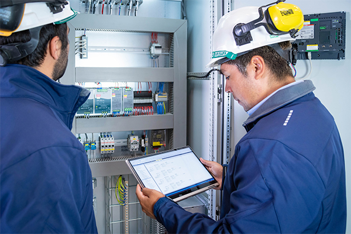

El concepto de automatización está enfocado en una disciplina de control que se basa en el uso de sistemas electromecánicos para controlar de forma automatizada diversos procesos industriales. Abarca control, sistemas digitales, supervisión, gestión de datos, accionamientos, instrumentación, comunicaciones, producción, interacciones y muchos otros. La automatización incorpora elementos y dispositivos tecnológicos que aseguran tener un control especifico sobre los procesos y sus evidentes comportamientos.
Ser una empresa líder por proporcionar soluciones en servicios de clase mundial en reparación de equipo y automatización, que permanezca a la vanguardia atravesó de la mejora continua para garantizar el bienestar de nuestra empresa, así como el desarrollo de nuestros clientes.

Esta automatización debe ser capaz de poder controlar efectivamente todo el conjunto de posibles eventos previstos frente a posibles ocurrencias; buscando siempre lograr la situación más favorable según la determinación de recursos asignados.